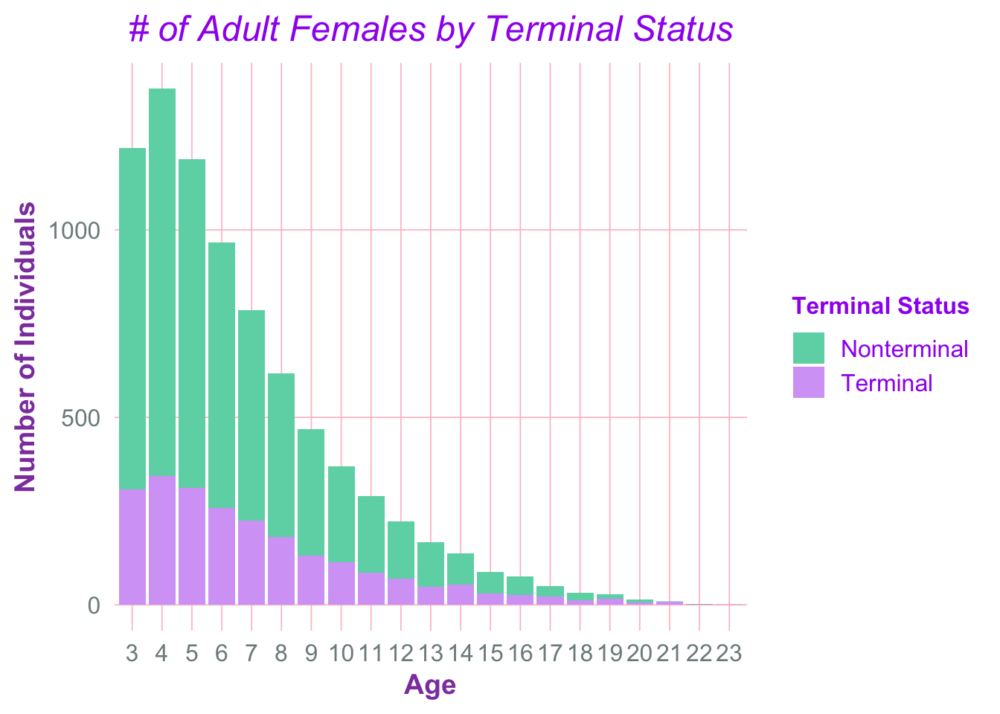
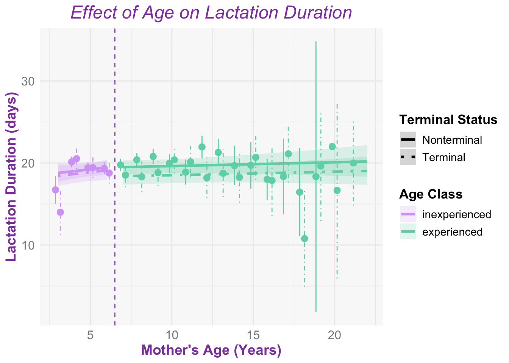
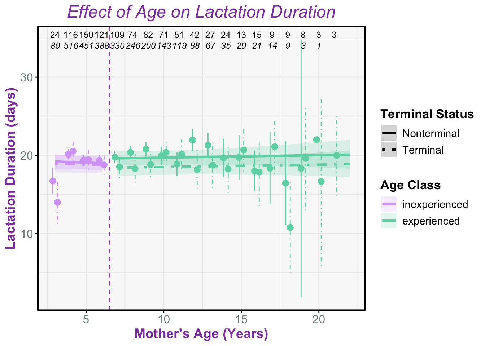
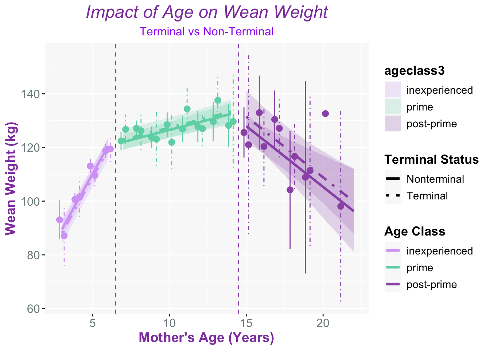
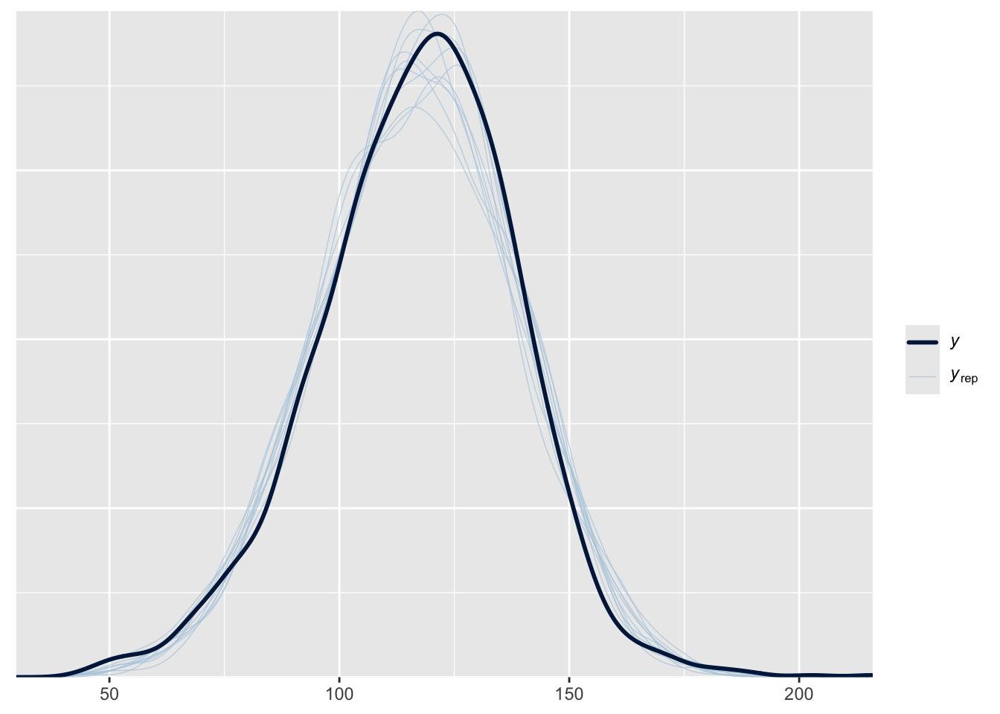
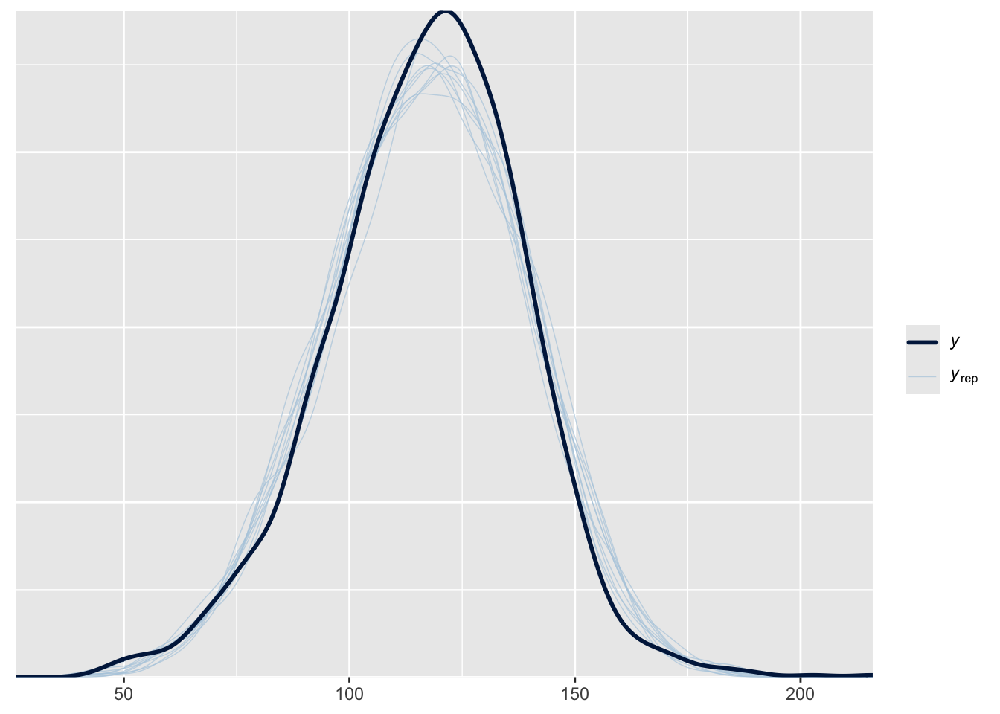

Studying Terminal Effects in Northern Elephant Seals
Downloading the Data and Libraries
Modified Datasets
Adult Female Population Figure
In some species terminal investment shows only in early years of reproduction, or during prime ages for breeding but often not in older ages due to senescence
Lactation Duration Model and Figures
My plan for this is to attempt to calculate lactation duration using the whole database by
1.) Modify the data set to only contain females so when “obssex” = “F” during the breeding season so when timeofyear = breeding
2.) Then contain only adult females observed with a pup
3.) Then calculation lactation duration using earliest date when “withpup” = 1 and then latest date when “withpup” = 1
Lactation Duration Model with Bayesian Stats
Running /Library/Frameworks/R.framework/Resources/bin/R CMD SHLIB foo.c
clang -arch arm64 -I"/Library/Frameworks/R.framework/Resources/include" -DNDEBUG -I"/Library/Frameworks/R.framework/Versions/4.2-arm64/Resources/library/Rcpp/include/" -I"/Library/Frameworks/R.framework/Versions/4.2-arm64/Resources/library/RcppEigen/include/" -I"/Library/Frameworks/R.framework/Versions/4.2-arm64/Resources/library/RcppEigen/include/unsupported" -I"/Library/Frameworks/R.framework/Versions/4.2-arm64/Resources/library/BH/include" -I"/Library/Frameworks/R.framework/Versions/4.2-arm64/Resources/library/StanHeaders/include/src/" -I"/Library/Frameworks/R.framework/Versions/4.2-arm64/Resources/library/StanHeaders/include/" -I"/Library/Frameworks/R.framework/Versions/4.2-arm64/Resources/library/RcppParallel/include/" -I"/Library/Frameworks/R.framework/Versions/4.2-arm64/Resources/library/rstan/include" -DEIGEN_NO_DEBUG -DBOOST_DISABLE_ASSERTS -DBOOST_PENDING_INTEGER_LOG2_HPP -DSTAN_THREADS -DUSE_STANC3 -DSTRICT_R_HEADERS -DBOOST_PHOENIX_NO_VARIADIC_EXPRESSION -D_HAS_AUTO_PTR_ETC=0 -include '/Library/Frameworks/R.framework/Versions/4.2-arm64/Resources/library/StanHeaders/include/stan/math/prim/fun/Eigen.hpp' -D_REENTRANT -DRCPP_PARALLEL_USE_TBB=1 -I/opt/R/arm64/include -fPIC -falign-functions=64 -Wall -g -O2 -c foo.c -o foo.o
In file included from <built-in>:1:
In file included from /Library/Frameworks/R.framework/Versions/4.2-arm64/Resources/library/StanHeaders/include/stan/math/prim/fun/Eigen.hpp:22:
In file included from /Library/Frameworks/R.framework/Versions/4.2-arm64/Resources/library/RcppEigen/include/Eigen/Dense:1:
In file included from /Library/Frameworks/R.framework/Versions/4.2-arm64/Resources/library/RcppEigen/include/Eigen/Core:19:
/Library/Frameworks/R.framework/Versions/4.2-arm64/Resources/library/RcppEigen/include/Eigen/src/Core/util/Macros.h:679:10: fatal error: 'cmath' file not found
#include <cmath>
^~~~~~~
1 error generated.
make: *** [foo.o] Error 1
SAMPLING FOR MODEL 'anon_model' NOW (CHAIN 1).
Chain 1:
Chain 1: Gradient evaluation took 0.000475 seconds
Chain 1: 1000 transitions using 10 leapfrog steps per transition would take 4.75 seconds.
Chain 1: Adjust your expectations accordingly!
Chain 1:
Chain 1:
Chain 1: Iteration: 1 / 2000 [ 0%] (Warmup)
Chain 1: Iteration: 200 / 2000 [ 10%] (Warmup)
Chain 1: Iteration: 400 / 2000 [ 20%] (Warmup)
Chain 1: Iteration: 600 / 2000 [ 30%] (Warmup)
Chain 1: Iteration: 800 / 2000 [ 40%] (Warmup)
Chain 1: Iteration: 1000 / 2000 [ 50%] (Warmup)
Chain 1: Iteration: 1001 / 2000 [ 50%] (Sampling)
Chain 1: Iteration: 1200 / 2000 [ 60%] (Sampling)
Chain 1: Iteration: 1400 / 2000 [ 70%] (Sampling)
Chain 1: Iteration: 1600 / 2000 [ 80%] (Sampling)
Chain 1: Iteration: 1800 / 2000 [ 90%] (Sampling)
Chain 1: Iteration: 2000 / 2000 [100%] (Sampling)
Chain 1:
Chain 1: Elapsed Time: 23.348 seconds (Warm-up)
Chain 1: 5.195 seconds (Sampling)
Chain 1: 28.543 seconds (Total)
Chain 1:
SAMPLING FOR MODEL 'anon_model' NOW (CHAIN 2).
Chain 2:
Chain 2: Gradient evaluation took 0.000341 seconds
Chain 2: 1000 transitions using 10 leapfrog steps per transition would take 3.41 seconds.
Chain 2: Adjust your expectations accordingly!
Chain 2:
Chain 2:
Chain 2: Iteration: 1 / 2000 [ 0%] (Warmup)
Chain 2: Iteration: 200 / 2000 [ 10%] (Warmup)
Chain 2: Iteration: 400 / 2000 [ 20%] (Warmup)
Chain 2: Iteration: 600 / 2000 [ 30%] (Warmup)
Chain 2: Iteration: 800 / 2000 [ 40%] (Warmup)
Chain 2: Iteration: 1000 / 2000 [ 50%] (Warmup)
Chain 2: Iteration: 1001 / 2000 [ 50%] (Sampling)
Chain 2: Iteration: 1200 / 2000 [ 60%] (Sampling)
Chain 2: Iteration: 1400 / 2000 [ 70%] (Sampling)
Chain 2: Iteration: 1600 / 2000 [ 80%] (Sampling)
Chain 2: Iteration: 1800 / 2000 [ 90%] (Sampling)
Chain 2: Iteration: 2000 / 2000 [100%] (Sampling)
Chain 2:
Chain 2: Elapsed Time: 25.356 seconds (Warm-up)
Chain 2: 10.37 seconds (Sampling)
Chain 2: 35.726 seconds (Total)
Chain 2:
SAMPLING FOR MODEL 'anon_model' NOW (CHAIN 3).
Chain 3:
Chain 3: Gradient evaluation took 0.000359 seconds
Chain 3: 1000 transitions using 10 leapfrog steps per transition would take 3.59 seconds.
Chain 3: Adjust your expectations accordingly!
Chain 3:
Chain 3:
Chain 3: Iteration: 1 / 2000 [ 0%] (Warmup)
Chain 3: Iteration: 200 / 2000 [ 10%] (Warmup)
Chain 3: Iteration: 400 / 2000 [ 20%] (Warmup)
Chain 3: Iteration: 600 / 2000 [ 30%] (Warmup)
Chain 3: Iteration: 800 / 2000 [ 40%] (Warmup)
Chain 3: Iteration: 1000 / 2000 [ 50%] (Warmup)
Chain 3: Iteration: 1001 / 2000 [ 50%] (Sampling)
Chain 3: Iteration: 1200 / 2000 [ 60%] (Sampling)
Chain 3: Iteration: 1400 / 2000 [ 70%] (Sampling)
Chain 3: Iteration: 1600 / 2000 [ 80%] (Sampling)
Chain 3: Iteration: 1800 / 2000 [ 90%] (Sampling)
Chain 3: Iteration: 2000 / 2000 [100%] (Sampling)
Chain 3:
Chain 3: Elapsed Time: 23.707 seconds (Warm-up)
Chain 3: 8.449 seconds (Sampling)
Chain 3: 32.156 seconds (Total)
Chain 3:
SAMPLING FOR MODEL 'anon_model' NOW (CHAIN 4).
Chain 4:
Chain 4: Gradient evaluation took 0.000349 seconds
Chain 4: 1000 transitions using 10 leapfrog steps per transition would take 3.49 seconds.
Chain 4: Adjust your expectations accordingly!
Chain 4:
Chain 4:
Chain 4: Iteration: 1 / 2000 [ 0%] (Warmup)
Chain 4: Iteration: 200 / 2000 [ 10%] (Warmup)
Chain 4: Iteration: 400 / 2000 [ 20%] (Warmup)
Chain 4: Iteration: 600 / 2000 [ 30%] (Warmup)
Chain 4: Iteration: 800 / 2000 [ 40%] (Warmup)
Chain 4: Iteration: 1000 / 2000 [ 50%] (Warmup)
Chain 4: Iteration: 1001 / 2000 [ 50%] (Sampling)
Chain 4: Iteration: 1200 / 2000 [ 60%] (Sampling)
Chain 4: Iteration: 1400 / 2000 [ 70%] (Sampling)
Chain 4: Iteration: 1600 / 2000 [ 80%] (Sampling)
Chain 4: Iteration: 1800 / 2000 [ 90%] (Sampling)
Chain 4: Iteration: 2000 / 2000 [100%] (Sampling)
Chain 4:
Chain 4: Elapsed Time: 23.718 seconds (Warm-up)
Chain 4: 10.202 seconds (Sampling)
Chain 4: 33.92 seconds (Total)
Chain 4: Family: negbinomial
Links: mu = log; shape = identity
Formula: lact_dur ~ age10 + age10:ageclass + terminal:ageclass + (1 | animalID) + (1 | season)
Data: lact_dat2 (Number of observations: 3691)
Draws: 4 chains, each with iter = 2000; warmup = 1000; thin = 1;
total post-warmup draws = 4000
Multilevel Hyperparameters:
~animalID (Number of levels: 1199)
Estimate Est.Error l-95% CI u-95% CI Rhat Bulk_ESS Tail_ESS
sd(Intercept) 0.02 0.01 0.00 0.04 1.00 1515 2169
~season (Number of levels: 47)
Estimate Est.Error l-95% CI u-95% CI Rhat Bulk_ESS Tail_ESS
sd(Intercept) 0.11 0.02 0.08 0.15 1.00 1205 1962
Regression Coefficients:
Estimate Est.Error l-95% CI u-95% CI Rhat
Intercept 2.97 0.02 2.92 3.01 1.00
age10 0.02 0.03 -0.04 0.08 1.00
age10:ageclassinexperienced 0.09 0.11 -0.13 0.31 1.00
ageclassexperienced:terminal -0.06 0.02 -0.11 -0.01 1.00
ageclassinexperienced:terminal -0.02 0.02 -0.07 0.03 1.00
Bulk_ESS Tail_ESS
Intercept 1283 1925
age10 4609 3484
age10:ageclassinexperienced 4245 2999
ageclassexperienced:terminal 5751 3218
ageclassinexperienced:terminal 6142 2636
Further Distributional Parameters:
Estimate Est.Error l-95% CI u-95% CI Rhat Bulk_ESS Tail_ESS
shape 7.45 0.26 6.96 7.97 1.00 5003 3146
Draws were sampled using sampling(NUTS). For each parameter, Bulk_ESS
and Tail_ESS are effective sample size measures, and Rhat is the potential
scale reduction factor on split chains (at convergence, Rhat = 1).
Lactation Duration Results Summary
Rhat =1.0; models convergence is accurate, intervals accurate
Seasonal differences (sd = 0.11) matter more than individual differences (sd = .02)
Age does not directly correlate to trend (Est = .02)
Terminal experienced mothers negative and credibly below 0 (Est -0.06)
About a 6% shorter lactation duration for terminal experienced mothers compared to non-terminal experienced mothers
Terminal status in inexperienced mothers (Est -0.02) does not have strong correlation
Takeaway: Overall, terminal status only effected experienced mothers, all other effects are uncertain.
Wean Weight Model
Running /Library/Frameworks/R.framework/Resources/bin/R CMD SHLIB foo.c
clang -arch arm64 -I"/Library/Frameworks/R.framework/Resources/include" -DNDEBUG -I"/Library/Frameworks/R.framework/Versions/4.2-arm64/Resources/library/Rcpp/include/" -I"/Library/Frameworks/R.framework/Versions/4.2-arm64/Resources/library/RcppEigen/include/" -I"/Library/Frameworks/R.framework/Versions/4.2-arm64/Resources/library/RcppEigen/include/unsupported" -I"/Library/Frameworks/R.framework/Versions/4.2-arm64/Resources/library/BH/include" -I"/Library/Frameworks/R.framework/Versions/4.2-arm64/Resources/library/StanHeaders/include/src/" -I"/Library/Frameworks/R.framework/Versions/4.2-arm64/Resources/library/StanHeaders/include/" -I"/Library/Frameworks/R.framework/Versions/4.2-arm64/Resources/library/RcppParallel/include/" -I"/Library/Frameworks/R.framework/Versions/4.2-arm64/Resources/library/rstan/include" -DEIGEN_NO_DEBUG -DBOOST_DISABLE_ASSERTS -DBOOST_PENDING_INTEGER_LOG2_HPP -DSTAN_THREADS -DUSE_STANC3 -DSTRICT_R_HEADERS -DBOOST_PHOENIX_NO_VARIADIC_EXPRESSION -D_HAS_AUTO_PTR_ETC=0 -include '/Library/Frameworks/R.framework/Versions/4.2-arm64/Resources/library/StanHeaders/include/stan/math/prim/fun/Eigen.hpp' -D_REENTRANT -DRCPP_PARALLEL_USE_TBB=1 -I/opt/R/arm64/include -fPIC -falign-functions=64 -Wall -g -O2 -c foo.c -o foo.o
In file included from <built-in>:1:
In file included from /Library/Frameworks/R.framework/Versions/4.2-arm64/Resources/library/StanHeaders/include/stan/math/prim/fun/Eigen.hpp:22:
In file included from /Library/Frameworks/R.framework/Versions/4.2-arm64/Resources/library/RcppEigen/include/Eigen/Dense:1:
In file included from /Library/Frameworks/R.framework/Versions/4.2-arm64/Resources/library/RcppEigen/include/Eigen/Core:19:
/Library/Frameworks/R.framework/Versions/4.2-arm64/Resources/library/RcppEigen/include/Eigen/src/Core/util/Macros.h:679:10: fatal error: 'cmath' file not found
#include <cmath>
^~~~~~~
1 error generated.
make: *** [foo.o] Error 1
SAMPLING FOR MODEL 'anon_model' NOW (CHAIN 1).
Chain 1:
Chain 1: Gradient evaluation took 0.000191 seconds
Chain 1: 1000 transitions using 10 leapfrog steps per transition would take 1.91 seconds.
Chain 1: Adjust your expectations accordingly!
Chain 1:
Chain 1:
Chain 1: Iteration: 1 / 2000 [ 0%] (Warmup)
Chain 1: Iteration: 200 / 2000 [ 10%] (Warmup)
Chain 1: Iteration: 400 / 2000 [ 20%] (Warmup)
Chain 1: Iteration: 600 / 2000 [ 30%] (Warmup)
Chain 1: Iteration: 800 / 2000 [ 40%] (Warmup)
Chain 1: Iteration: 1000 / 2000 [ 50%] (Warmup)
Chain 1: Iteration: 1001 / 2000 [ 50%] (Sampling)
Chain 1: Iteration: 1200 / 2000 [ 60%] (Sampling)
Chain 1: Iteration: 1400 / 2000 [ 70%] (Sampling)
Chain 1: Iteration: 1600 / 2000 [ 80%] (Sampling)
Chain 1: Iteration: 1800 / 2000 [ 90%] (Sampling)
Chain 1: Iteration: 2000 / 2000 [100%] (Sampling)
Chain 1:
Chain 1: Elapsed Time: 4.079 seconds (Warm-up)
Chain 1: 2.848 seconds (Sampling)
Chain 1: 6.927 seconds (Total)
Chain 1:
SAMPLING FOR MODEL 'anon_model' NOW (CHAIN 2).
Chain 2:
Chain 2: Gradient evaluation took 8.5e-05 seconds
Chain 2: 1000 transitions using 10 leapfrog steps per transition would take 0.85 seconds.
Chain 2: Adjust your expectations accordingly!
Chain 2:
Chain 2:
Chain 2: Iteration: 1 / 2000 [ 0%] (Warmup)
Chain 2: Iteration: 200 / 2000 [ 10%] (Warmup)
Chain 2: Iteration: 400 / 2000 [ 20%] (Warmup)
Chain 2: Iteration: 600 / 2000 [ 30%] (Warmup)
Chain 2: Iteration: 800 / 2000 [ 40%] (Warmup)
Chain 2: Iteration: 1000 / 2000 [ 50%] (Warmup)
Chain 2: Iteration: 1001 / 2000 [ 50%] (Sampling)
Chain 2: Iteration: 1200 / 2000 [ 60%] (Sampling)
Chain 2: Iteration: 1400 / 2000 [ 70%] (Sampling)
Chain 2: Iteration: 1600 / 2000 [ 80%] (Sampling)
Chain 2: Iteration: 1800 / 2000 [ 90%] (Sampling)
Chain 2: Iteration: 2000 / 2000 [100%] (Sampling)
Chain 2:
Chain 2: Elapsed Time: 9.056 seconds (Warm-up)
Chain 2: 2.828 seconds (Sampling)
Chain 2: 11.884 seconds (Total)
Chain 2:
SAMPLING FOR MODEL 'anon_model' NOW (CHAIN 3).
Chain 3:
Chain 3: Gradient evaluation took 8.8e-05 seconds
Chain 3: 1000 transitions using 10 leapfrog steps per transition would take 0.88 seconds.
Chain 3: Adjust your expectations accordingly!
Chain 3:
Chain 3:
Chain 3: Iteration: 1 / 2000 [ 0%] (Warmup)
Chain 3: Iteration: 200 / 2000 [ 10%] (Warmup)
Chain 3: Iteration: 400 / 2000 [ 20%] (Warmup)
Chain 3: Iteration: 600 / 2000 [ 30%] (Warmup)
Chain 3: Iteration: 800 / 2000 [ 40%] (Warmup)
Chain 3: Iteration: 1000 / 2000 [ 50%] (Warmup)
Chain 3: Iteration: 1001 / 2000 [ 50%] (Sampling)
Chain 3: Iteration: 1200 / 2000 [ 60%] (Sampling)
Chain 3: Iteration: 1400 / 2000 [ 70%] (Sampling)
Chain 3: Iteration: 1600 / 2000 [ 80%] (Sampling)
Chain 3: Iteration: 1800 / 2000 [ 90%] (Sampling)
Chain 3: Iteration: 2000 / 2000 [100%] (Sampling)
Chain 3:
Chain 3: Elapsed Time: 5.584 seconds (Warm-up)
Chain 3: 2.831 seconds (Sampling)
Chain 3: 8.415 seconds (Total)
Chain 3:
SAMPLING FOR MODEL 'anon_model' NOW (CHAIN 4).
Chain 4:
Chain 4: Gradient evaluation took 8.6e-05 seconds
Chain 4: 1000 transitions using 10 leapfrog steps per transition would take 0.86 seconds.
Chain 4: Adjust your expectations accordingly!
Chain 4:
Chain 4:
Chain 4: Iteration: 1 / 2000 [ 0%] (Warmup)
Chain 4: Iteration: 200 / 2000 [ 10%] (Warmup)
Chain 4: Iteration: 400 / 2000 [ 20%] (Warmup)
Chain 4: Iteration: 600 / 2000 [ 30%] (Warmup)
Chain 4: Iteration: 800 / 2000 [ 40%] (Warmup)
Chain 4: Iteration: 1000 / 2000 [ 50%] (Warmup)
Chain 4: Iteration: 1001 / 2000 [ 50%] (Sampling)
Chain 4: Iteration: 1200 / 2000 [ 60%] (Sampling)
Chain 4: Iteration: 1400 / 2000 [ 70%] (Sampling)
Chain 4: Iteration: 1600 / 2000 [ 80%] (Sampling)
Chain 4: Iteration: 1800 / 2000 [ 90%] (Sampling)
Chain 4: Iteration: 2000 / 2000 [100%] (Sampling)
Chain 4:
Chain 4: Elapsed Time: 5.084 seconds (Warm-up)
Chain 4: 2.82 seconds (Sampling)
Chain 4: 7.904 seconds (Total)
Chain 4: Family: gaussian
Links: mu = identity; sigma = identity
Formula: Wt ~ age + age_prime + age_post_prime + terminal:ageclass3 + (1 | year) + (1 | animalID)
Data: wt_dat (Number of observations: 1595)
Draws: 4 chains, each with iter = 2000; warmup = 1000; thin = 1;
total post-warmup draws = 4000
Multilevel Hyperparameters:
~animalID (Number of levels: 779)
Estimate Est.Error l-95% CI u-95% CI Rhat Bulk_ESS Tail_ESS
sd(Intercept) 9.88 0.63 8.67 11.14 1.00 1351 2593
~year (Number of levels: 42)
Estimate Est.Error l-95% CI u-95% CI Rhat Bulk_ESS Tail_ESS
sd(Intercept) 7.74 1.21 5.59 10.35 1.00 1066 1843
Regression Coefficients:
Estimate Est.Error l-95% CI u-95% CI Rhat
Intercept 58.46 3.28 51.99 64.94 1.00
age 10.36 0.59 9.17 11.50 1.00
age_prime -8.86 0.73 -10.30 -7.39 1.00
age_post_prime -6.07 1.15 -8.30 -3.82 1.00
terminal:ageclass3inexperienced -1.28 1.61 -4.48 1.87 1.00
terminal:ageclass3prime 0.86 1.61 -2.38 3.99 1.00
terminal:ageclass3postMprime 3.60 5.31 -6.97 14.30 1.00
Bulk_ESS Tail_ESS
Intercept 2377 2935
age 3103 3018
age_prime 3249 2923
age_post_prime 3864 3362
terminal:ageclass3inexperienced 4635 3274
terminal:ageclass3prime 5632 3303
terminal:ageclass3postMprime 4479 2942
Further Distributional Parameters:
Estimate Est.Error l-95% CI u-95% CI Rhat Bulk_ESS Tail_ESS
sigma 14.92 0.36 14.22 15.65 1.00 1862 2478
Draws were sampled using sampling(NUTS). For each parameter, Bulk_ESS
and Tail_ESS are effective sample size measures, and Rhat is the potential
scale reduction factor on split chains (at convergence, Rhat = 1).

Wean Weight Summary Results
Rhat = 1 which means the model converged nicely meaning all estimates should be reliable.
From this, we see that age has a positive outcome on the effect (Est: + 10.37)
Prime (Est -8.88) and Post-prime (Est -6.03) age classes are credibly lower
Estimates don’t support that terminal status interacting with age class changes chance of wean weight outcome.
Variation for individual(Est: 9.86) and year (Est: 7.74) are substantial
Sex Ratios Model and Figure
We hypothesize that young terminal moms will have a higher chance of giving birth to a male offspring sex ratio than non terminal moms. Whereas old terminal moms will produce less males compared to non terminal moms
Running /Library/Frameworks/R.framework/Resources/bin/R CMD SHLIB foo.c
clang -arch arm64 -I"/Library/Frameworks/R.framework/Resources/include" -DNDEBUG -I"/Library/Frameworks/R.framework/Versions/4.2-arm64/Resources/library/Rcpp/include/" -I"/Library/Frameworks/R.framework/Versions/4.2-arm64/Resources/library/RcppEigen/include/" -I"/Library/Frameworks/R.framework/Versions/4.2-arm64/Resources/library/RcppEigen/include/unsupported" -I"/Library/Frameworks/R.framework/Versions/4.2-arm64/Resources/library/BH/include" -I"/Library/Frameworks/R.framework/Versions/4.2-arm64/Resources/library/StanHeaders/include/src/" -I"/Library/Frameworks/R.framework/Versions/4.2-arm64/Resources/library/StanHeaders/include/" -I"/Library/Frameworks/R.framework/Versions/4.2-arm64/Resources/library/RcppParallel/include/" -I"/Library/Frameworks/R.framework/Versions/4.2-arm64/Resources/library/rstan/include" -DEIGEN_NO_DEBUG -DBOOST_DISABLE_ASSERTS -DBOOST_PENDING_INTEGER_LOG2_HPP -DSTAN_THREADS -DUSE_STANC3 -DSTRICT_R_HEADERS -DBOOST_PHOENIX_NO_VARIADIC_EXPRESSION -D_HAS_AUTO_PTR_ETC=0 -include '/Library/Frameworks/R.framework/Versions/4.2-arm64/Resources/library/StanHeaders/include/stan/math/prim/fun/Eigen.hpp' -D_REENTRANT -DRCPP_PARALLEL_USE_TBB=1 -I/opt/R/arm64/include -fPIC -falign-functions=64 -Wall -g -O2 -c foo.c -o foo.o
In file included from <built-in>:1:
In file included from /Library/Frameworks/R.framework/Versions/4.2-arm64/Resources/library/StanHeaders/include/stan/math/prim/fun/Eigen.hpp:22:
In file included from /Library/Frameworks/R.framework/Versions/4.2-arm64/Resources/library/RcppEigen/include/Eigen/Dense:1:
In file included from /Library/Frameworks/R.framework/Versions/4.2-arm64/Resources/library/RcppEigen/include/Eigen/Core:19:
/Library/Frameworks/R.framework/Versions/4.2-arm64/Resources/library/RcppEigen/include/Eigen/src/Core/util/Macros.h:679:10: fatal error: 'cmath' file not found
#include <cmath>
^~~~~~~
1 error generated.
make: *** [foo.o] Error 1
SAMPLING FOR MODEL 'anon_model' NOW (CHAIN 1).
Chain 1:
Chain 1: Gradient evaluation took 0.000253 seconds
Chain 1: 1000 transitions using 10 leapfrog steps per transition would take 2.53 seconds.
Chain 1: Adjust your expectations accordingly!
Chain 1:
Chain 1:
Chain 1: Iteration: 1 / 4000 [ 0%] (Warmup)
Chain 1: Iteration: 400 / 4000 [ 10%] (Warmup)
Chain 1: Iteration: 800 / 4000 [ 20%] (Warmup)
Chain 1: Iteration: 1200 / 4000 [ 30%] (Warmup)
Chain 1: Iteration: 1600 / 4000 [ 40%] (Warmup)
Chain 1: Iteration: 2000 / 4000 [ 50%] (Warmup)
Chain 1: Iteration: 2001 / 4000 [ 50%] (Sampling)
Chain 1: Iteration: 2400 / 4000 [ 60%] (Sampling)
Chain 1: Iteration: 2800 / 4000 [ 70%] (Sampling)
Chain 1: Iteration: 3200 / 4000 [ 80%] (Sampling)
Chain 1: Iteration: 3600 / 4000 [ 90%] (Sampling)
Chain 1: Iteration: 4000 / 4000 [100%] (Sampling)
Chain 1:
Chain 1: Elapsed Time: 8.714 seconds (Warm-up)
Chain 1: 8.4 seconds (Sampling)
Chain 1: 17.114 seconds (Total)
Chain 1:
SAMPLING FOR MODEL 'anon_model' NOW (CHAIN 2).
Chain 2:
Chain 2: Gradient evaluation took 0.000139 seconds
Chain 2: 1000 transitions using 10 leapfrog steps per transition would take 1.39 seconds.
Chain 2: Adjust your expectations accordingly!
Chain 2:
Chain 2:
Chain 2: Iteration: 1 / 4000 [ 0%] (Warmup)
Chain 2: Iteration: 400 / 4000 [ 10%] (Warmup)
Chain 2: Iteration: 800 / 4000 [ 20%] (Warmup)
Chain 2: Iteration: 1200 / 4000 [ 30%] (Warmup)
Chain 2: Iteration: 1600 / 4000 [ 40%] (Warmup)
Chain 2: Iteration: 2000 / 4000 [ 50%] (Warmup)
Chain 2: Iteration: 2001 / 4000 [ 50%] (Sampling)
Chain 2: Iteration: 2400 / 4000 [ 60%] (Sampling)
Chain 2: Iteration: 2800 / 4000 [ 70%] (Sampling)
Chain 2: Iteration: 3200 / 4000 [ 80%] (Sampling)
Chain 2: Iteration: 3600 / 4000 [ 90%] (Sampling)
Chain 2: Iteration: 4000 / 4000 [100%] (Sampling)
Chain 2:
Chain 2: Elapsed Time: 969.127 seconds (Warm-up)
Chain 2: 8.281 seconds (Sampling)
Chain 2: 977.408 seconds (Total)
Chain 2:
SAMPLING FOR MODEL 'anon_model' NOW (CHAIN 3).
Chain 3:
Chain 3: Gradient evaluation took 0.000165 seconds
Chain 3: 1000 transitions using 10 leapfrog steps per transition would take 1.65 seconds.
Chain 3: Adjust your expectations accordingly!
Chain 3:
Chain 3:
Chain 3: Iteration: 1 / 4000 [ 0%] (Warmup)
Chain 3: Iteration: 400 / 4000 [ 10%] (Warmup)
Chain 3: Iteration: 800 / 4000 [ 20%] (Warmup)
Chain 3: Iteration: 1200 / 4000 [ 30%] (Warmup)
Chain 3: Iteration: 1600 / 4000 [ 40%] (Warmup)
Chain 3: Iteration: 2000 / 4000 [ 50%] (Warmup)
Chain 3: Iteration: 2001 / 4000 [ 50%] (Sampling)
Chain 3: Iteration: 2400 / 4000 [ 60%] (Sampling)
Chain 3: Iteration: 2800 / 4000 [ 70%] (Sampling)
Chain 3: Iteration: 3200 / 4000 [ 80%] (Sampling)
Chain 3: Iteration: 3600 / 4000 [ 90%] (Sampling)
Chain 3: Iteration: 4000 / 4000 [100%] (Sampling)
Chain 3:
Chain 3: Elapsed Time: 8.794 seconds (Warm-up)
Chain 3: 8.214 seconds (Sampling)
Chain 3: 17.008 seconds (Total)
Chain 3:
SAMPLING FOR MODEL 'anon_model' NOW (CHAIN 4).
Chain 4:
Chain 4: Gradient evaluation took 0.000135 seconds
Chain 4: 1000 transitions using 10 leapfrog steps per transition would take 1.35 seconds.
Chain 4: Adjust your expectations accordingly!
Chain 4:
Chain 4:
Chain 4: Iteration: 1 / 4000 [ 0%] (Warmup)
Chain 4: Iteration: 400 / 4000 [ 10%] (Warmup)
Chain 4: Iteration: 800 / 4000 [ 20%] (Warmup)
Chain 4: Iteration: 1200 / 4000 [ 30%] (Warmup)
Chain 4: Iteration: 1600 / 4000 [ 40%] (Warmup)
Chain 4: Iteration: 2000 / 4000 [ 50%] (Warmup)
Chain 4: Iteration: 2001 / 4000 [ 50%] (Sampling)
Chain 4: Iteration: 2400 / 4000 [ 60%] (Sampling)
Chain 4: Iteration: 2800 / 4000 [ 70%] (Sampling)
Chain 4: Iteration: 3200 / 4000 [ 80%] (Sampling)
Chain 4: Iteration: 3600 / 4000 [ 90%] (Sampling)
Chain 4: Iteration: 4000 / 4000 [100%] (Sampling)
Chain 4:
Chain 4: Elapsed Time: 910.231 seconds (Warm-up)
Chain 4: 8.231 seconds (Sampling)
Chain 4: 918.462 seconds (Total)
Chain 4: Family: bernoulli
Links: mu = logit
Formula: is_male ~ age10 + age10:ageclass + terminal:ageclass + (1 | animalID) + (1 | year_fct)
Data: sex_dat (Number of observations: 2208)
Draws: 4 chains, each with iter = 4000; warmup = 2000; thin = 1;
total post-warmup draws = 8000
Multilevel Hyperparameters:
~animalID (Number of levels: 943)
Estimate Est.Error l-95% CI u-95% CI Rhat Bulk_ESS Tail_ESS
sd(Intercept) 0.17 0.11 0.01 0.41 1.00 1339 2149
~year_fct (Number of levels: 47)
Estimate Est.Error l-95% CI u-95% CI Rhat Bulk_ESS Tail_ESS
sd(Intercept) 0.17 0.08 0.02 0.33 1.00 1789 2153
Regression Coefficients:
Estimate Est.Error l-95% CI u-95% CI Rhat
Intercept 0.02 0.08 -0.14 0.18 1.00
age10 0.31 0.57 -0.83 1.41 1.00
age10:ageclassexperienced -0.18 0.67 -1.48 1.13 1.00
ageclassinexperienced:terminal 0.23 0.15 -0.07 0.53 1.00
ageclassexperienced:terminal 0.39 0.15 0.11 0.69 1.00
Bulk_ESS Tail_ESS
Intercept 8836 5968
age10 7235 4982
age10:ageclassexperienced 7163 5087
ageclassinexperienced:terminal 14357 4683
ageclassexperienced:terminal 13439 4985
Draws were sampled using sampling(NUTS). For each parameter, Bulk_ESS
and Tail_ESS are effective sample size measures, and Rhat is the potential
scale reduction factor on split chains (at convergence, Rhat = 1).
Offspring Sex Ratio Summary Results:
Rhat = 1 which means the model converged nicely meaning all estimates should be reliable.
Slight variation for individual and year (Est: 0.17 for both)
Only terminal status is positively associate with the outcome in experienced mothers (Est: 0.39)
Effects of age are uncertain, intercept near 0 and not credibly different than 0
Pup Survival Figure
Running /Library/Frameworks/R.framework/Resources/bin/R CMD SHLIB foo.c
clang -arch arm64 -I"/Library/Frameworks/R.framework/Resources/include" -DNDEBUG -I"/Library/Frameworks/R.framework/Versions/4.2-arm64/Resources/library/Rcpp/include/" -I"/Library/Frameworks/R.framework/Versions/4.2-arm64/Resources/library/RcppEigen/include/" -I"/Library/Frameworks/R.framework/Versions/4.2-arm64/Resources/library/RcppEigen/include/unsupported" -I"/Library/Frameworks/R.framework/Versions/4.2-arm64/Resources/library/BH/include" -I"/Library/Frameworks/R.framework/Versions/4.2-arm64/Resources/library/StanHeaders/include/src/" -I"/Library/Frameworks/R.framework/Versions/4.2-arm64/Resources/library/StanHeaders/include/" -I"/Library/Frameworks/R.framework/Versions/4.2-arm64/Resources/library/RcppParallel/include/" -I"/Library/Frameworks/R.framework/Versions/4.2-arm64/Resources/library/rstan/include" -DEIGEN_NO_DEBUG -DBOOST_DISABLE_ASSERTS -DBOOST_PENDING_INTEGER_LOG2_HPP -DSTAN_THREADS -DUSE_STANC3 -DSTRICT_R_HEADERS -DBOOST_PHOENIX_NO_VARIADIC_EXPRESSION -D_HAS_AUTO_PTR_ETC=0 -include '/Library/Frameworks/R.framework/Versions/4.2-arm64/Resources/library/StanHeaders/include/stan/math/prim/fun/Eigen.hpp' -D_REENTRANT -DRCPP_PARALLEL_USE_TBB=1 -I/opt/R/arm64/include -fPIC -falign-functions=64 -Wall -g -O2 -c foo.c -o foo.o
In file included from <built-in>:1:
In file included from /Library/Frameworks/R.framework/Versions/4.2-arm64/Resources/library/StanHeaders/include/stan/math/prim/fun/Eigen.hpp:22:
In file included from /Library/Frameworks/R.framework/Versions/4.2-arm64/Resources/library/RcppEigen/include/Eigen/Dense:1:
In file included from /Library/Frameworks/R.framework/Versions/4.2-arm64/Resources/library/RcppEigen/include/Eigen/Core:19:
/Library/Frameworks/R.framework/Versions/4.2-arm64/Resources/library/RcppEigen/include/Eigen/src/Core/util/Macros.h:679:10: fatal error: 'cmath' file not found
#include <cmath>
^~~~~~~
1 error generated.
make: *** [foo.o] Error 1
SAMPLING FOR MODEL 'anon_model' NOW (CHAIN 1).
Chain 1:
Chain 1: Gradient evaluation took 0.000117 seconds
Chain 1: 1000 transitions using 10 leapfrog steps per transition would take 1.17 seconds.
Chain 1: Adjust your expectations accordingly!
Chain 1:
Chain 1:
Chain 1: Iteration: 1 / 4000 [ 0%] (Warmup)
Chain 1: Iteration: 400 / 4000 [ 10%] (Warmup)
Chain 1: Iteration: 800 / 4000 [ 20%] (Warmup)
Chain 1: Iteration: 1200 / 4000 [ 30%] (Warmup)
Chain 1: Iteration: 1600 / 4000 [ 40%] (Warmup)
Chain 1: Iteration: 2000 / 4000 [ 50%] (Warmup)
Chain 1: Iteration: 2001 / 4000 [ 50%] (Sampling)
Chain 1: Iteration: 2400 / 4000 [ 60%] (Sampling)
Chain 1: Iteration: 2800 / 4000 [ 70%] (Sampling)
Chain 1: Iteration: 3200 / 4000 [ 80%] (Sampling)
Chain 1: Iteration: 3600 / 4000 [ 90%] (Sampling)
Chain 1: Iteration: 4000 / 4000 [100%] (Sampling)
Chain 1:
Chain 1: Elapsed Time: 18.242 seconds (Warm-up)
Chain 1: 43.253 seconds (Sampling)
Chain 1: 61.495 seconds (Total)
Chain 1:
SAMPLING FOR MODEL 'anon_model' NOW (CHAIN 2).
Chain 2:
Chain 2: Gradient evaluation took 4.5e-05 seconds
Chain 2: 1000 transitions using 10 leapfrog steps per transition would take 0.45 seconds.
Chain 2: Adjust your expectations accordingly!
Chain 2:
Chain 2:
Chain 2: Iteration: 1 / 4000 [ 0%] (Warmup)
Chain 2: Iteration: 400 / 4000 [ 10%] (Warmup)
Chain 2: Iteration: 800 / 4000 [ 20%] (Warmup)
Chain 2: Iteration: 1200 / 4000 [ 30%] (Warmup)
Chain 2: Iteration: 1600 / 4000 [ 40%] (Warmup)
Chain 2: Iteration: 2000 / 4000 [ 50%] (Warmup)
Chain 2: Iteration: 2001 / 4000 [ 50%] (Sampling)
Chain 2: Iteration: 2400 / 4000 [ 60%] (Sampling)
Chain 2: Iteration: 2800 / 4000 [ 70%] (Sampling)
Chain 2: Iteration: 3200 / 4000 [ 80%] (Sampling)
Chain 2: Iteration: 3600 / 4000 [ 90%] (Sampling)
Chain 2: Iteration: 4000 / 4000 [100%] (Sampling)
Chain 2:
Chain 2: Elapsed Time: 56.956 seconds (Warm-up)
Chain 2: 21.894 seconds (Sampling)
Chain 2: 78.85 seconds (Total)
Chain 2:
SAMPLING FOR MODEL 'anon_model' NOW (CHAIN 3).
Chain 3:
Chain 3: Gradient evaluation took 4.8e-05 seconds
Chain 3: 1000 transitions using 10 leapfrog steps per transition would take 0.48 seconds.
Chain 3: Adjust your expectations accordingly!
Chain 3:
Chain 3:
Chain 3: Iteration: 1 / 4000 [ 0%] (Warmup)
Chain 3: Iteration: 400 / 4000 [ 10%] (Warmup)
Chain 3: Iteration: 800 / 4000 [ 20%] (Warmup)
Chain 3: Iteration: 1200 / 4000 [ 30%] (Warmup)
Chain 3: Iteration: 1600 / 4000 [ 40%] (Warmup)
Chain 3: Iteration: 2000 / 4000 [ 50%] (Warmup)
Chain 3: Iteration: 2001 / 4000 [ 50%] (Sampling)
Chain 3: Iteration: 2400 / 4000 [ 60%] (Sampling)
Chain 3: Iteration: 2800 / 4000 [ 70%] (Sampling)
Chain 3: Iteration: 3200 / 4000 [ 80%] (Sampling)
Chain 3: Iteration: 3600 / 4000 [ 90%] (Sampling)
Chain 3: Iteration: 4000 / 4000 [100%] (Sampling)
Chain 3:
Chain 3: Elapsed Time: 48.264 seconds (Warm-up)
Chain 3: 86.497 seconds (Sampling)
Chain 3: 134.761 seconds (Total)
Chain 3:
SAMPLING FOR MODEL 'anon_model' NOW (CHAIN 4).
Chain 4:
Chain 4: Gradient evaluation took 4.7e-05 seconds
Chain 4: 1000 transitions using 10 leapfrog steps per transition would take 0.47 seconds.
Chain 4: Adjust your expectations accordingly!
Chain 4:
Chain 4:
Chain 4: Iteration: 1 / 4000 [ 0%] (Warmup)
Chain 4: Iteration: 400 / 4000 [ 10%] (Warmup)
Chain 4: Iteration: 800 / 4000 [ 20%] (Warmup)
Chain 4: Iteration: 1200 / 4000 [ 30%] (Warmup)
Chain 4: Iteration: 1600 / 4000 [ 40%] (Warmup)
Chain 4: Iteration: 2000 / 4000 [ 50%] (Warmup)
Chain 4: Iteration: 2001 / 4000 [ 50%] (Sampling)
Chain 4: Iteration: 2400 / 4000 [ 60%] (Sampling)
Chain 4: Iteration: 2800 / 4000 [ 70%] (Sampling)
Chain 4: Iteration: 3200 / 4000 [ 80%] (Sampling)
Chain 4: Iteration: 3600 / 4000 [ 90%] (Sampling)
Chain 4: Iteration: 4000 / 4000 [100%] (Sampling)
Chain 4:
Chain 4: Elapsed Time: 152.02 seconds (Warm-up)
Chain 4: 43.657 seconds (Sampling)
Chain 4: 195.677 seconds (Total)
Chain 4: Family: bernoulli
Links: mu = logit
Formula: pup_surv_int ~ age + age_prime + age_post_prime + terminal:ageclass3 + (1 | animalID) + (1 | year_fct)
Data: surv_recr_data (Number of observations: 637)
Draws: 4 chains, each with iter = 4000; warmup = 2000; thin = 1;
total post-warmup draws = 8000
Multilevel Hyperparameters:
~animalID (Number of levels: 370)
Estimate Est.Error l-95% CI u-95% CI Rhat Bulk_ESS Tail_ESS
sd(Intercept) 0.42 0.26 0.03 0.96 1.01 588 1794
~year_fct (Number of levels: 22)
Estimate Est.Error l-95% CI u-95% CI Rhat Bulk_ESS Tail_ESS
sd(Intercept) 0.56 0.18 0.24 0.97 1.00 1602 1752
Regression Coefficients:
Estimate Est.Error l-95% CI u-95% CI Rhat
Intercept -0.15 0.70 -1.53 1.23 1.00
age -0.14 0.14 -0.42 0.12 1.00
age_prime 0.24 0.17 -0.08 0.58 1.00
age_post_prime -0.47 0.39 -1.30 0.24 1.00
terminal:ageclass3inexperienced -0.22 0.31 -0.84 0.37 1.00
terminal:ageclass3prime -0.21 0.35 -0.90 0.50 1.00
terminal:ageclass3postMprime -407.43 449.64 -1689.40 -12.55 1.00
Bulk_ESS Tail_ESS
Intercept 3416 4835
age 3158 3965
age_prime 3004 4078
age_post_prime 5986 4741
terminal:ageclass3inexperienced 6870 4716
terminal:ageclass3prime 6692 4959
terminal:ageclass3postMprime 1478 1071
Draws were sampled using sampling(NUTS). For each parameter, Bulk_ESS
and Tail_ESS are effective sample size measures, and Rhat is the potential
scale reduction factor on split chains (at convergence, Rhat = 1).
Pup Survival Results Summary
Rhat = 1 for all parameters, indicating good convergence and reliable estimates.
Moderate variation among individuals (SD = 0.44) and years (SD = 0.56), showing some random effect influence.
The effects of age and age class are uncertain, as their estimates overlap zero and are not credibly different from 0.
The interaction between terminal status and age class is weak overall, for some reason, there is a very large negative and highly uncertain estimate for the post-prime moms (Est: –420 ± 551), which suggests an the effect can be unstable or just highly uncertain
Overall, the model shows no strong evidence for consistent effects of age, age class, or terminal status on the outcome, with wide uncertainty across parameters. no credibility according to the bayesian stats summary